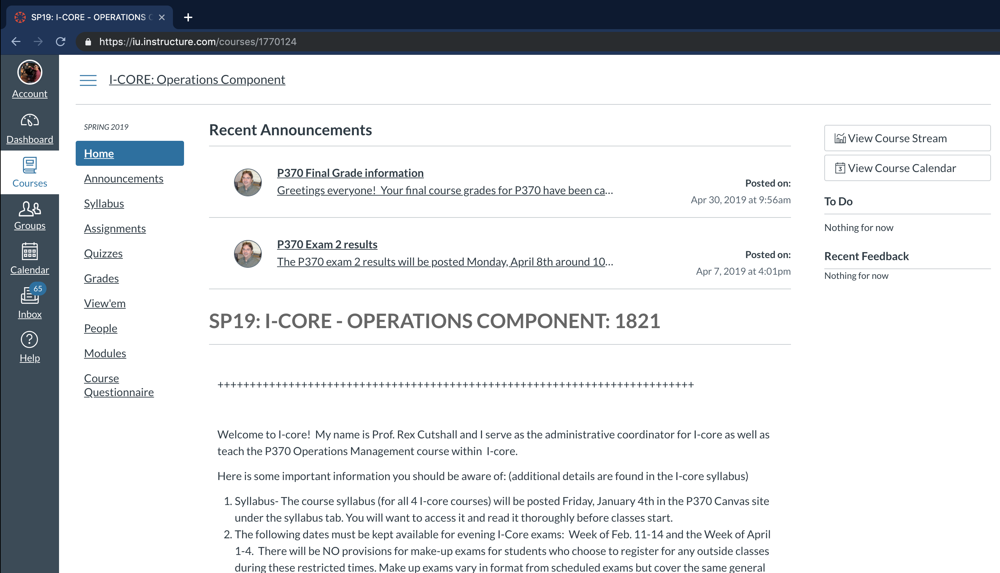
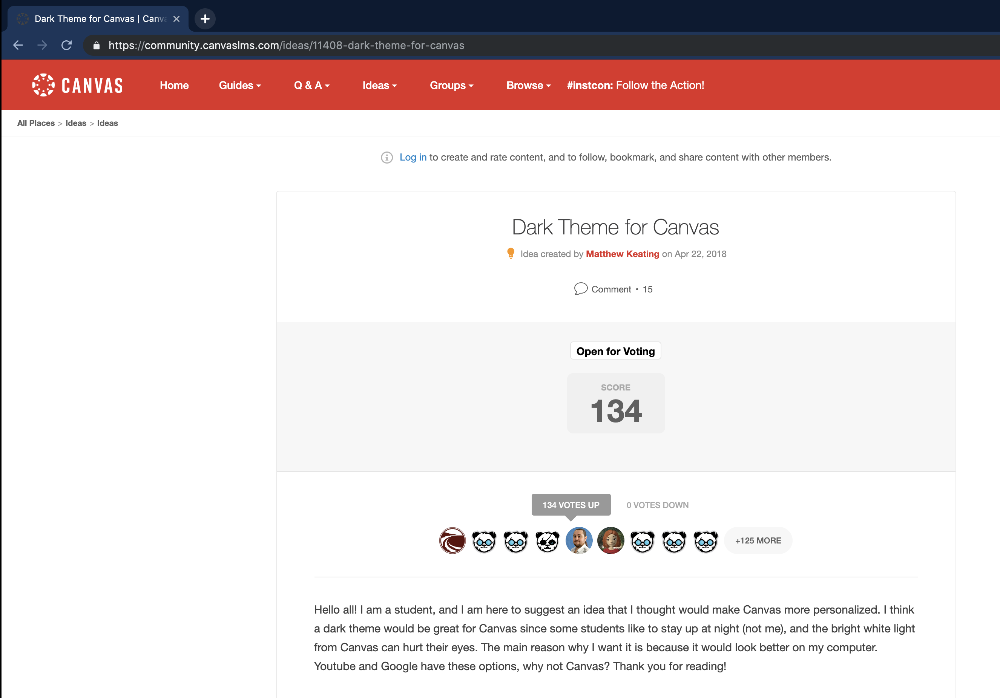

PROJECT
Personalize Canvas
February 12 2019

TOOLS USED
- JavaScript
Canvas
Indiana University's classes use a learning management system (LMS) called Canvas which is an application offered by a company called Instructure. Instructure offers LMS services for over 300 educational institutions in the USA.
Here at my school, the canvas website is an essential tool for each student. All online assignment submissions, discussion posts as well as professor announcements are made on the canvas course page. Students spend a lot of time working on weekly quizzes and assignments on the website itself.
Canvas Dashboard Page
Canvas Course Page
No Dark Mode :(
Working on assignments late at night became an unpleasant experience when the white background blasted through my laptop. I searched online for any resources to change the background of my course page but instead I found others suffering from the same problem.
Canvas Forum Page
Canvas has a community forum where students can propose any features they would like to see on the website. Numerous students wanted a dark theme for canvas that would let them work on the site late at night too without hurting their eyes.
Solution :)
Since the people at Instructure would take time to implement this feature, I was too impatient to wait. I watched Daniel Shiffman's 'How to make a Google Chrome Extension' tutorial to make a small app for my browser. Here are the results.